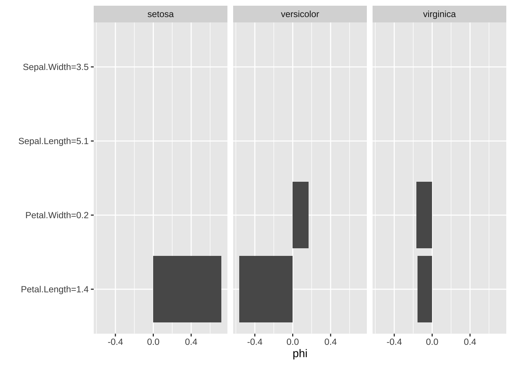
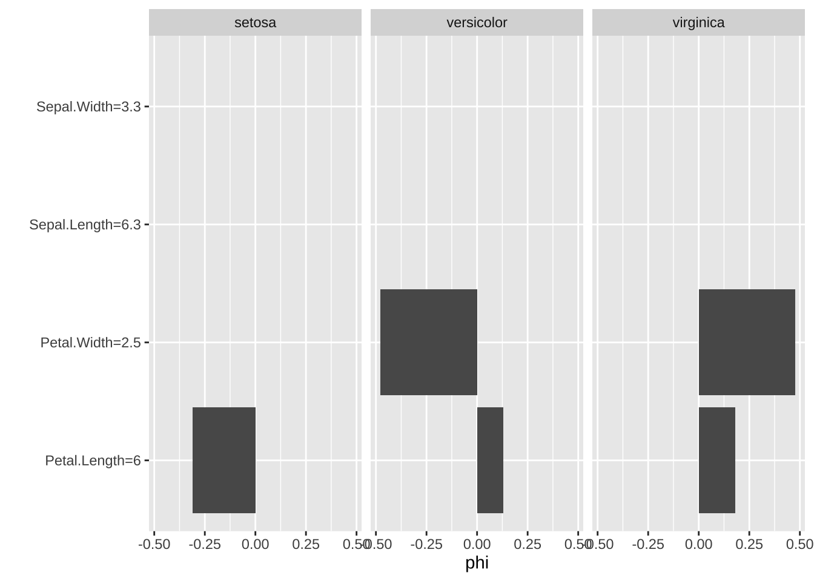
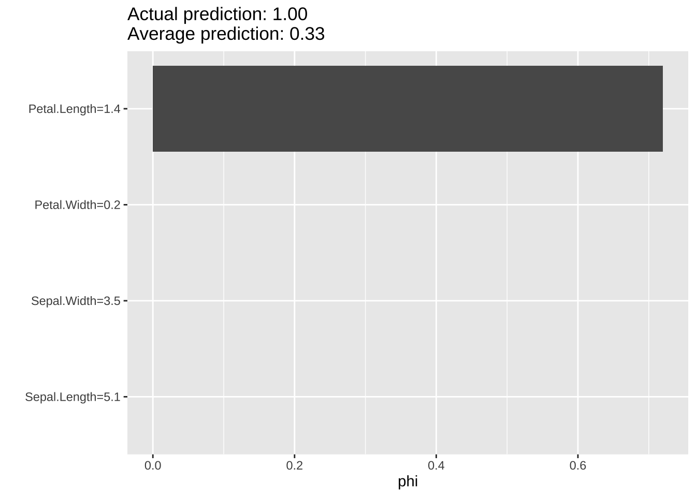
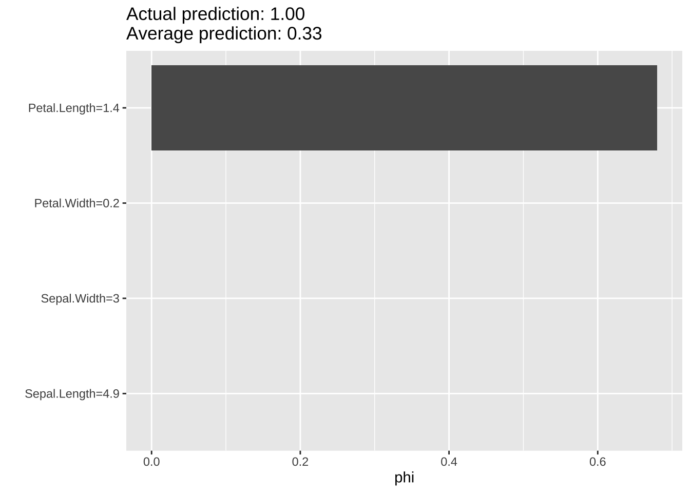

14 XAI (Explainable AI)
深層学習に代表される“予測精度”を追求する (機械学習を含む) AIのモデルは,「高精度」な一方「ブラックボックス」なものが多い. しかし, これらのモデル・アルゴリズムの実用化に際して, 特に, 医療・金融・司法など人のいのちや財産, 社会秩序に関する領域などにおいては,「説明責任」「透明性」が強く求められる. XAI（Explainable AI）は, AI研究の一領域として 登場し, AIの予測力の向上に伴い, 2010年代後半頃から活発に研究が行われるようになってきている.
XAIの進展の裏にある社会的・倫理的な背景として, 欧州を中心に, AIの開発・利用に対して, 意思決定の過程がわかること (透明性), 人間がモデルの判断に責任を持てること (説明責任), 差別やバイアスがないこと (公正性), 利用者が安心して使えること (信頼性) などを求める機運の高まりがある. (国際・国内のガイドラインとして, EU: Art. 22 GDPR, OECD: AI原則 (2019), 内閣府: 人間中心のAI原則 (2019), 等)
このようなAI技術を取り巻く世界的な潮流の中, XAIは,「ブラックボックス」であるAIを「解釈可能」にすることを目的とする方法(論) の総称を指す.
本章では, XAIの以下の4つの手法を取り上げ, パッケージimlを用いて実際に動かしてみる.
- PDP (Partial Dependence Plot
- ICE (Individual Conditional Expectaion
- LIME (Local Interpretable Model-agnostic Explanations)
- SHAP (SHapley Additive exPlanations)
本章の主要な参考資料:
- (https://cran.r-project.org/web/packages/iml/vignettes/intro.html)[https://cran.r-project.org/web/packages/iml/vignettes/intro.html]
- (https://christophm.github.io/interpretable-ml-book/)[https://christophm.github.io/interpretable-ml-book/]
回帰問題のケース
データセット (1): ボストン市内住宅物件価格データ
ここでは, すでに馴染みのあるデータセットBoston Housingを利用する.
- Boston Housingデータ
- crim: 地域の一人当たり犯罪率
- zn: 25,000平方フィート以上の住宅用地の割合
- indus: 地域の非小売業の土地の割合
- chas: チャールズ川のダミー変数 (1: 川沿い, 0: それ以外)
- nox: 窒素酸化物濃度（1000万ppm）
- rm: 住宅の平均部屋数
- age: 1940年以前に建設された持ち家の割合
- dis: ボストンの5つの雇用中心地 (employment centers) までの距離の加重平均
- rad: 放射状高速道路へのアクセス指数
- tax: 10,000米ドル当たりの固定資産税率
- ptratio: 地域の生徒数・教師数比率
- b: 人種的指標, 1000(B - 0.63)^2, (Bは地域の黒人の割合)
- lstat: 低所得者層の割合
- medv: 持ち家住宅の中央値（1000ドル単位）
- 506件 x 14変数 (オリジナル版)
- source: http://lib.stat.cmu.edu/datasets/bostondata("Boston", package = "MASS")
housing <- Boston
head(housing, 10)
#> crim zn indus chas nox rm age dis rad tax ptratio black
#> 1 0.00632 18.0 2.31 0 0.538 6.575 65.2 4.0900 1 296 15.3 396.90
#> 2 0.02731 0.0 7.07 0 0.469 6.421 78.9 4.9671 2 242 17.8 396.90
#> 3 0.02729 0.0 7.07 0 0.469 7.185 61.1 4.9671 2 242 17.8 392.83
#> 4 0.03237 0.0 2.18 0 0.458 6.998 45.8 6.0622 3 222 18.7 394.63
#> 5 0.06905 0.0 2.18 0 0.458 7.147 54.2 6.0622 3 222 18.7 396.90
#> 6 0.02985 0.0 2.18 0 0.458 6.430 58.7 6.0622 3 222 18.7 394.12
#> 7 0.08829 12.5 7.87 0 0.524 6.012 66.6 5.5605 5 311 15.2 395.60
#> 8 0.14455 12.5 7.87 0 0.524 6.172 96.1 5.9505 5 311 15.2 396.90
#> 9 0.21124 12.5 7.87 0 0.524 5.631 100.0 6.0821 5 311 15.2 386.63
#> 10 0.17004 12.5 7.87 0 0.524 6.004 85.9 6.5921 5 311 15.2 386.71
#> lstat medv
#> 1 4.98 24.0
#> 2 9.14 21.6
#> 3 4.03 34.7
#> 4 2.94 33.4
#> 5 5.33 36.2
#> 6 5.21 28.7
#> 7 12.43 22.9
#> 8 19.15 27.1
#> 9 29.93 16.5
#> 10 17.10 18.9
# 目的変数の全体平均
mean(housing$medv)
#> [1] 22.53281はじめに, 次に行うAIモデルによる予測およびそれに対するXAIとの比較のためのベースラインとして, 線形回帰を実行しておく.
fit_lm <- lm(medv ~ ., data = housing)
summary(fit_lm)
#>
#> Call:
#> lm(formula = medv ~ ., data = housing)
#>
#> Residuals:
#> Min 1Q Median 3Q Max
#> -15.595 -2.730 -0.518 1.777 26.199
#>
#> Coefficients:
#> Estimate Std. Error t value Pr(>|t|)
#> (Intercept) 3.646e+01 5.103e+00 7.144 3.28e-12 ***
#> crim -1.080e-01 3.286e-02 -3.287 0.001087 **
#> zn 4.642e-02 1.373e-02 3.382 0.000778 ***
#> indus 2.056e-02 6.150e-02 0.334 0.738288
#> chas 2.687e+00 8.616e-01 3.118 0.001925 **
#> nox -1.777e+01 3.820e+00 -4.651 4.25e-06 ***
#> rm 3.810e+00 4.179e-01 9.116 < 2e-16 ***
#> age 6.922e-04 1.321e-02 0.052 0.958229
#> dis -1.476e+00 1.995e-01 -7.398 6.01e-13 ***
#> rad 3.060e-01 6.635e-02 4.613 5.07e-06 ***
#> tax -1.233e-02 3.760e-03 -3.280 0.001112 **
#> ptratio -9.527e-01 1.308e-01 -7.283 1.31e-12 ***
#> black 9.312e-03 2.686e-03 3.467 0.000573 ***
#> lstat -5.248e-01 5.072e-02 -10.347 < 2e-16 ***
#> ---
#> Signif. codes: 0 '***' 0.001 '**' 0.01 '*' 0.05 '.' 0.1 ' ' 1
#>
#> Residual standard error: 4.745 on 492 degrees of freedom
#> Multiple R-squared: 0.7406, Adjusted R-squared: 0.7338
#> F-statistic: 108.1 on 13 and 492 DF, p-value: < 2.2e-16
head(predict(fit_lm), 10)
#> 1 2 3 4 5 6 7 8
#> 30.00384 25.02556 30.56760 28.60704 27.94352 25.25628 23.00181 19.53599
#> 9 10
#> 11.52364 18.92026本セクションでは, XAIを適用するターゲットの”ブラックボックス”のAIモデルとして, ランダムフォレストを使って学習したモデルを採用することにする.
# ランダムフォレストを予測モデルとして用いる例
library(randomForest)
set.seed(123)
fit_rf <- randomForest(medv ~ ., data = housing, importance = T)注) set.seed() は, ランダム性が導入される関数の直前で使うのが良い.
# 予測値
head(predict(fit_rf), 10)
#> 1 2 3 4 5 6 7 8
#> 28.13112 23.10451 35.59140 35.84795 33.27872 26.74190 20.59782 17.69223
#> 9 10
#> 18.12466 19.24212
# 予測値の全体平均
mean(predict(fit_rf), 10)
#> [1] 20.99478ちなみに, パッケージimlを使わずとも,
パッケージrandomForestの関数randomForest()の出力オブジェクトに対して
関数varImpPlot(), importance()を適用することで, 予測の精度に大きく影響を与える重要な変数を調べることができる
(変数重要度, variable importance, または,
特徴量重要度, feature importance).
importance(fit_rf) # variable importance measuresの計算
#> %IncMSE IncNodePurity
#> crim 16.791858 2466.9292
#> zn 3.963144 339.2476
#> indus 11.099242 2623.0736
#> chas 4.552989 233.0437
#> nox 17.347112 2798.0707
#> rm 38.544414 12418.5753
#> age 13.912714 1150.8200
#> dis 19.502610 2548.5988
#> rad 6.766537 373.6200
#> tax 12.182840 1234.9363
#> ptratio 16.404295 2613.0837
#> black 10.020137 768.5835
#> lstat 31.462441 12225.0302importance()の出力として,
1つ目の指標は, 分類問題においては, 誤差率, 回帰問題においては, MSEを
予測誤差として採用し, OOB (Out-Of-Bounce) データを使用し, 学習モデルで計算される予測誤差と, 各予測変数につきpermutationしたモデルで計算される予測誤差の差
の大きさを全ての木にわたって標準化した値である.
2つ目の指標は, 分類問題においてはGini係数, 回帰問題においてはRSSを
各ノードの”不純度”として採用し, その予測変数での木の分割による不純度の減少の合計を
全ての木にわたって平均したものである.
メモ
- パッケージimlは, "R6クラス"と呼ばれる (オブジェクト指向型プログラミングのための)
Rのオブジェクト・クラスを使用
- → 例えば, Predict$new()により, 新しいオブジェクトを生成 (なお, set.seed()は不要)以下では, ランダムフォレストの適合をもとに生成されたオブジェクト
predictorに対して, 各手法の関数を適用する.
14.1 PFI
特徴量lstatに対するPFI (Permuation Feature Importance) を見たい場合には, 以下のコマンドを実行する.
# imp <- FeatureImp$new(predictor, loss = "mse") # 損失関数=MSE
set.seed(111)
imp <- FeatureImp$new(predictor, loss = "mae") # 同MAE
library("ggplot2")
imp$plot()# plot(imp)
imp$results
#> feature importance.05 importance importance.95 permutation.error
#> 1 lstat 4.405448 4.542547 4.738602 4.2729783
#> 2 rm 3.583264 3.673631 3.808067 3.4556260
#> 3 nox 1.788788 1.804862 1.815528 1.6977554
#> 4 dis 1.667062 1.699978 1.730544 1.5990959
#> 5 crim 1.687770 1.698387 1.727456 1.5975997
#> 6 ptratio 1.626979 1.673878 1.725824 1.5745446
#> 7 indus 1.492030 1.509591 1.534473 1.4200074
#> 8 age 1.398376 1.424283 1.428581 1.3397619
#> 9 tax 1.347987 1.369031 1.401911 1.2877886
#> 10 black 1.240707 1.259959 1.276161 1.1851890
#> 11 rad 1.113053 1.124778 1.127646 1.0580301
#> 12 zn 1.051388 1.058540 1.061038 0.9957227
#> 13 chas 1.029757 1.037440 1.047849 0.9758753これより, lstat, 次にrmの重要度が特に大きいことが分かる.
14.2 PDP
特徴量lstatに対するPDP (Partial Dependence Plot) を見たい場合には, 以下のコマンドを実行する.
# 特徴量lstatに対するPDP
pdp <- FeatureEffect$new(predictor, feature = "lstat",
method = "pdp", grid.size = 10)
pdp$plot()変数lstatが増えれば目的変数medvが減少すること,
しかも非線形であること (下に凸) が観察される.
他の特徴量, たとえば, lstatについで重要度の次に大きいrmや, ptratioに対するICEは, 上の出力を再利用することで作成できる.
14.3 ICE
データ点ごとの, 特徴量に対する予測値の変化はICE (Individual Conditional Expectaion) で知ることができる.
特徴量lstatに対するICEを見たい場合には, 以下のコマンドを実行する.
特徴量rmやptrationに対するICEは, 上の出力を再利用することで作成できる.
14.4 LIME
局所代理モデルの一手法であるLIME (Local Interpretable Model-agnostic Explanations), そのバリエーションを実行する.
LocalModel():
- LIMEの一種. 局所的重み付け回帰モデルによる適合
- ターゲットのデータ点からの距離で重み付け
- 回帰問題は線形回帰, 分析問題はロジスティック回帰
- L1-正則化によりスパース性に対応
- 内部では, 関数glmmet() 使用
- LIMEとの相違
- 近傍として, 乱数ではなく, オリジナルデータを使用する
- ユークリッド距離に基づいたカーネルではなく, gower距離によって近さを評価1番目のデータ点の予測値 (25.61) に対するLIMEは以下のように実行する.
lime_explain <- LocalModel$new(predictor, x.interest = X[1, ])
# 線形近似 (LocalModel()) による予測値
predict(lime_explain)
#> prediction
#> 1 28.83728
lime_explain$results
#> beta x.recoded effect x.original feature feature.value
#> rm 4.2921777 6.575 28.221068 6.575 rm rm=6.575
#> ptratio -0.5211485 15.300 -7.973572 15.3 ptratio ptratio=15.3
#> lstat -0.4304489 4.980 -2.143635 4.98 lstat lstat=4.98
lime_explain$plot()注) 標準のLIMEと異なり, LocalModel()は近傍データ生成に乱数は非使用 (∴set.seed()は不要. 但し, 不確かな場合には常に実行するのが安全)
得られた結果は, 1番目のデータ点の予測に対する判断の根拠を
線形回帰の結果を解釈しながら与えることができる.
すなわち, (LASSOにより選択された) 変数の回帰係数の推定値が \(\beta_{rm}=4.29\), \(\beta_{ptratio}=-0.52\), \(\beta_{lstat}=-0.43\)
であることから, 1番目の予測に対しては, 変数rmは (他の
全ての変数を固定した状態で) 1単位増えれば, \(4,29\)増加する要因と
なっているが, 一方, lstat, ptratioはそれぞれ, \(-0.52, -0.43\)減少
させていることを示す.
また, 各変数が1番目の予測にもたらしている貢献度の大きさは,
各変数の値を対応する係数と掛け合せることで,
\((4.29) \cdot 6.58 \approx 28.22\), \((-0.52) \cdot 15.3 \approx -7.97\),
\((-0.43) \cdot 4.98 \approx -2.14\) と (近似的に) 見積もることができ, これが横棒グラフで示されている.
同様に, 2番目のデータ点の予測値 (22.27) に対するLIMEは以下の通りである.
lime_explain$explain(X[2, ])
lime_explain$results
#> beta x.recoded effect x.original feature feature.value
#> rm 4.1213297 6.421 26.463058 6.421 rm rm=6.421
#> ptratio -0.5276824 17.800 -9.392746 17.8 ptratio ptratio=17.8
#> lstat -0.4368639 9.140 -3.992936 9.14 lstat lstat=9.14
lime_explain$plot()1番目と比較して, 各変数の値ばかりでなく, 回帰係数の大きさも多少ではあるが異なっている. すなわち,
貢献度の大きさとしては, rmは1.7程度減少し, 一方, ptratio, lstatはそれぞれ-1.4, -1.8程度マイナス方向に大きくなっており,
これらが, 予測値を相対的に小さくすることに
つながっている可能性が考えられる.
ただし, LIMEでは, 各データ点ことに異なる 代理モデルによる説明がなされることから, 異なるデータ点間の結果を直接比較することは元来想定しておらず, 上のような推察の妥当性はただちに保証されるものではない.
異なるデータ点直接比較したい場合には, 例えば, 先のICEや, 次のSHAP等が有効である.
14.5 SHAP
SHAP (SHapley Additive exPlanations) は, 協力ゲーム理論に基づいて, データ点に対するモデル予測値を, 平均的なモデル予測値と各特徴量の“貢献度”の和で表現する方法で, 各データ点の予測値に対して解釈性を与える一手法である.
set.seed(123)
# 1番目のデータ点での予測に対する分解 (局所的説明)
shapley <- Shapley$new(predictor,
x.interest = X[1, ], sample.size = 50)
shapley$plot()アウトプットの中で, SHAP 値（Shapley 値）は phiを読めばよい.
phi.var はモンテカルロ標本から計算される当該特徴量の寄与の分散の大きさである (小さいほど信頼性が高い).
sample.sizeを大きくすることで, 推定の精度を高めることができる.
feature.valueは指定したデータ点における各特徴量の大きさを示す.
上記コードは実行時間がかかる.
引数sample.sizeの大きさで計算スピードとSHAP値計算の近似精度を
コントロールできる. ここでは, 50に設定する.
注) Shapley 値の厳密計算は全特徴の順列 (coalitions) に対して計算する必要があるが, 特徴数が多い場合は計算量が爆発する. そこで, iml の Shapley クラスは, sample.sizeで指定した回数だけランダムに順列を生成し, 近似値を計算する. 結果の再現性を得るためには, Shapley$new() の直前に set.seed() を 呼び出すことで, 乱数を固定する必要がある.
Shapley()
- 引数sample.size: Monte Carlo samples for estimating the Shapley value.
The number of times coalitions/marginals are sampled from data X.
The higher the more accurate the explanations become.# 結果の取り出し
shapley$results
#> feature phi phi.var feature.value
#> 1 crim -0.08912329 1.01012316 crim=0.00632
#> 2 zn 0.03006019 0.01803672 zn=18
#> 3 indus 0.73077923 0.93525970 indus=2.31
#> 4 chas -0.04483238 0.03785947 chas=0
#> 5 nox -0.10584816 0.46886359 nox=0.538
#> 6 rm -0.53912733 17.44803543 rm=6.575
#> 7 age 0.01470670 0.41226685 age=65.2
#> 8 dis -0.09587154 1.21952939 dis=4.09
#> 9 rad -0.28381549 0.04738203 rad=1
#> 10 tax -0.05629366 0.27861079 tax=296
#> 11 ptratio 0.82536628 1.28844605 ptratio=15.3
#> 12 black -0.04250537 0.16910755 black=396.9
#> 13 lstat 2.95122635 13.04978775 lstat=4.98SHAPの方法論によれば, 1番目のデータ点に対する予測値 (25.49) は, 全体平均 (22.54) にプラスして, 各予測変数からの貢献に分解できる (乱数の発生具合で結果が変わる).
\[ \hat{f}({\bf x}_1) = E[\hat{f}({\bf X})] + \phi_{crim} + \phi_{zn} + \cdots + \phi_{black} + \phi_{lstat} \] \[ 25.72 = 22.52 - 0.09 + 0.03 + \cdots - 0.04 + 2.95 \]
中でも, 貢献度の大きな項 (変数と値 (単位は千ドル)) は, \[ \phi_{lstat} = 2.95, \phi_{ptratio} = 0.83,\phi_{indus} = 0.73, \phi_{rm} = - 0.54, \phi_{rad} = - 0.28,\phi_{nox} = - 0.11, \] 等となっている.
注) SHAPでは, 全体平均を除いた部分について,
各変数の貢献度を線形に分解する.
ここでの結果は, lstat, ptratiは大きくプラスに貢献,
一方, rmはマイナスに貢献となっており, 最初に行った
線形回帰はもとより, 上の局所線形モデルによる
解釈と符号が異なっていることに注意したい.
注) x.interest をコンストラクタShapley$new()に渡した場合、その時点で当該インスタンスの Shapley 値が計算され, shapley$results に格納される. 一方, $explain() は, 別のデータ点 (インスタンス) を後から説明したいときに使うメソッドである.
# 結果の取り出し
shapley$results
#> feature phi phi.var feature.value
#> 1 crim -0.055606769 1.01576757 crim=0.02731
#> 2 zn -0.038531200 0.01179324 zn=0
#> 3 indus -0.260136695 0.47798871 indus=7.07
#> 4 chas 0.000000000 0.00000000 chas=0
#> 5 nox 0.382234296 1.01537087 nox=0.469
#> 6 rm -1.422404701 19.08075359 rm=6.421
#> 7 age -0.231572537 0.20677965 age=78.9
#> 8 dis -0.179151233 0.34188332 dis=4.9671
#> 9 rad -0.158878084 0.03891879 rad=2
#> 10 tax 0.171894830 0.54395722 tax=242
#> 11 ptratio 0.201743110 0.82863870 ptratio=17.8
#> 12 black -0.007767299 0.04527014 black=396.9
#> 13 lstat 0.455681606 12.42825560 lstat=9.14注) 授業内配布済Rコード内では, 以下のブロックが記載されていましたが, マニュアルに記載されていない用法であったため, 訂正の上, 削除いたします
# 以下のブロックは削除のこと
# 全データセットの平均 (大局的説明)
shapley$explain(x.interest = X)
shapley$plot()
# plot(shapley) # average分類問題のケース
次に, 分類問題のケースについて扱う.
#### データセット (2): irisデータ {-}
データセットとしては, (レコード数も変数も少なく出力結果を理解しやすい) irisを使用する.
多値分類問題の例 (iris)
ここでは, Shapley()の動作確認に主眼におき,
平易な設定を扱う.
まず, irisのターゲットの変数Speciesは, 3水準のカテゴリー変数 (因子型)で,
setosa (1〜50行), versicolor (51〜100行), virginica (101〜150行)
の値を持つ.
iris[1:3, ]
#> Sepal.Length Sepal.Width Petal.Length Petal.Width Species
#> 1 5.1 3.5 1.4 0.2 setosa
#> 2 4.9 3.0 1.4 0.2 setosa
#> 3 4.7 3.2 1.3 0.2 setosa
iris[51:53, ]
#> Sepal.Length Sepal.Width Petal.Length Petal.Width Species
#> 51 7.0 3.2 4.7 1.4 versicolor
#> 52 6.4 3.2 4.5 1.5 versicolor
#> 53 6.9 3.1 4.9 1.5 versicolor
iris[101:103, ]
#> Sepal.Length Sepal.Width Petal.Length Petal.Width Species
#> 101 6.3 3.3 6.0 2.5 virginica
#> 102 5.8 2.7 5.1 1.9 virginica
#> 103 7.1 3.0 5.9 2.1 virginicaまた, “ホワイトボックス”モデルである決定木をターゲットモデルに採用し, SHAPの出力がどのようなものになるかを確認する.
# Species: setosa (1〜50), versicolor (51〜100), virginica (101〜150)
library(rpart)
set.seed(123)
fit_rpart <- rpart(Species ~ ., data = iris)ローカルな分析を行うことから, 比較のために,
ターゲット変数Speciesの3水準の各値に対応するデータ点 (インスタンス)
として, 1,2 (setosa), 51 (versicolor), 101 (virginica) をピックアップする.
# 決定木による確率予測値
predict(fit_rpart)[c(1, 2, 51, 101), ]
#> setosa versicolor virginica
#> 1 1 0.00000000 0.00000000
#> 2 1 0.00000000 0.00000000
#> 51 0 0.90740741 0.09259259
#> 101 0 0.02173913 0.97826087個々のデータ点における, モデルの出力である確率予測に対する 各特徴量の貢献度の評価を行いたい ($type = “prob”).
# 1番目のデータ点 (setosa) に対する説明
set.seed(123)
shapley <- Shapley$new(mod, x.interest = X[1, ])
shapley$results
#> feature class phi phi.var feature.value
#> 1 Sepal.Length setosa 0.0000000 0.00000000 Sepal.Length=5.1
#> 2 Sepal.Width setosa 0.0000000 0.00000000 Sepal.Width=3.5
#> 3 Petal.Length setosa 0.7200000 0.20363636 Petal.Length=1.4
#> 4 Petal.Width setosa 0.0000000 0.00000000 Petal.Width=0.2
#> 5 Sepal.Length versicolor 0.0000000 0.00000000 Sepal.Length=5.1
#> 6 Sepal.Width versicolor 0.0000000 0.00000000 Sepal.Width=3.5
#> 7 Petal.Length versicolor -0.5647665 0.19352196 Petal.Length=1.4
#> 8 Petal.Width versicolor 0.1682770 0.12193984 Petal.Width=0.2
#> 9 Sepal.Length virginica 0.0000000 0.00000000 Sepal.Length=5.1
#> 10 Sepal.Width virginica 0.0000000 0.00000000 Sepal.Width=3.5
#> 11 Petal.Length virginica -0.1552335 0.07769444 Petal.Length=1.4
#> 12 Petal.Width virginica -0.1682770 0.12193984 Petal.Width=0.2
plot(shapley)
1番目のデータ点は, \(\phi_{Petal.Length}=0.70\) であり,
予測モデルがSpecies==setosaの確率\(\approx1\)と予測した
最大の理由となっていることを示している.
# 2番目 (setosa)
shapley$explain(x.interest = X[2, ])
shapley$results
#> feature class phi phi.var feature.value
#> 1 Sepal.Length setosa 0.0000000 0.0000000 Sepal.Length=4.9
#> 2 Sepal.Width setosa 0.0000000 0.0000000 Sepal.Width=3
#> 3 Petal.Length setosa 0.6800000 0.2197980 Petal.Length=1.4
#> 4 Petal.Width setosa 0.0000000 0.0000000 Petal.Width=0.2
#> 5 Sepal.Length versicolor 0.0000000 0.0000000 Sepal.Length=4.9
#> 6 Sepal.Width versicolor 0.0000000 0.0000000 Sepal.Width=3
#> 7 Petal.Length versicolor -0.4664734 0.2044554 Petal.Length=1.4
#> 8 Petal.Width versicolor 0.1417069 0.1064894 Petal.Width=0.2
#> 9 Sepal.Length virginica 0.0000000 0.0000000 Sepal.Length=4.9
#> 10 Sepal.Width virginica 0.0000000 0.0000000 Sepal.Width=3
#> 11 Petal.Length virginica -0.2135266 0.1226948 Petal.Length=1.4
#> 12 Petal.Width virginica -0.1417069 0.1064894 Petal.Width=0.2
plot(shapley)# 51番目 (versicolor)
shapley$explain(x.interest = X[51, ])
shapley$results
#> feature class phi phi.var feature.value
#> 1 Sepal.Length setosa 0.00000000 0.000000000 Sepal.Length=7
#> 2 Sepal.Width setosa 0.00000000 0.000000000 Sepal.Width=3.2
#> 3 Petal.Length setosa -0.38000000 0.237979798 Petal.Length=4.7
#> 4 Petal.Width setosa 0.00000000 0.000000000 Petal.Width=1.4
#> 5 Sepal.Length versicolor 0.00000000 0.000000000 Sepal.Length=7
#> 6 Sepal.Width versicolor 0.00000000 0.000000000 Sepal.Width=3.2
#> 7 Petal.Length versicolor 0.34481481 0.195949758 Petal.Length=4.7
#> 8 Petal.Width versicolor 0.32769726 0.184692499 Petal.Width=1.4
#> 9 Sepal.Length virginica 0.00000000 0.000000000 Sepal.Length=7
#> 10 Sepal.Width virginica 0.00000000 0.000000000 Sepal.Width=3.2
#> 11 Petal.Length virginica 0.03518519 0.002040293 Petal.Length=4.7
#> 12 Petal.Width virginica -0.32769726 0.184692499 Petal.Width=1.4
plot(shapley)# 101番目 (verginica)
shapley$explain(x.interest = X[101, ])
shapley$results
#> feature class phi phi.var feature.value
#> 1 Sepal.Length setosa 0.0000000 0.00000000 Sepal.Length=6.3
#> 2 Sepal.Width setosa 0.0000000 0.00000000 Sepal.Width=3.3
#> 3 Petal.Length setosa -0.3100000 0.21606061 Petal.Length=6
#> 4 Petal.Width setosa 0.0000000 0.00000000 Petal.Width=2.5
#> 5 Sepal.Length versicolor 0.0000000 0.00000000 Sepal.Length=6.3
#> 6 Sepal.Width versicolor 0.0000000 0.00000000 Sepal.Width=3.3
#> 7 Petal.Length versicolor 0.1307327 0.09925621 Petal.Length=6
#> 8 Petal.Width versicolor -0.4782609 0.19681517 Petal.Width=2.5
#> 9 Sepal.Length virginica 0.0000000 0.00000000 Sepal.Length=6.3
#> 10 Sepal.Width virginica 0.0000000 0.00000000 Sepal.Width=3.3
#> 11 Petal.Length virginica 0.1792673 0.13308338 Petal.Length=6
#> 12 Petal.Width virginica 0.4782609 0.19681517 Petal.Width=2.5
plot(shapley)
2値分類問題
最後に, (setosaか否か) に限定して動作を確認する.
# 一つのクラス (setosa) にフォーカスする場合
# setosaか否か
mod <- Predictor$new(fit_rpart, data = X, type = "prob", class = "setosa")set.seed(123)
shapley <- Shapley$new(mod, x.interest = X[1, ])
shapley$results
#> feature phi phi.var feature.value
#> 1 Sepal.Length 0.00 0.0000000 Sepal.Length=5.1
#> 2 Sepal.Width 0.00 0.0000000 Sepal.Width=3.5
#> 3 Petal.Length 0.72 0.2036364 Petal.Length=1.4
#> 4 Petal.Width 0.00 0.0000000 Petal.Width=0.2
plot(shapley)
